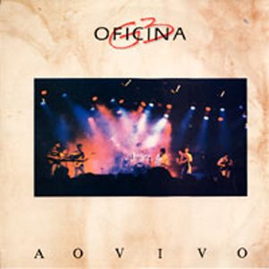

Ao Vivo
1990 • Rock Cristão
O Álbum
Ao Vivo é o álbum de estreia da banda brasileira de rock Oficina G3, lançado pela gravadora
Gospel
Records em 1990.
Das nove canções gravadas no disco, seis foram regravadas em trabalhos
posteriores, e algumas tiveram grande relevância para uma geração de cristãos que testemunhou o
desenvolvimento do rock cristão brasileiro, naquela época ainda incipiente.
É o único álbum do grupo com Túlio Régis nos vocais, que logo sairia do Oficina G3 por problemas
conjugais.
O álbum foi gravado na casa de eventos Dama Shock. Juninho Afram disse, anos mais tarde, que a
ideia de uma banda iniciar sua discografia com um álbum ao vivo era absurda e foi tomada com
base nos elogios que os músicos
recebiam em seus shows. Segundo o guitarrista, a gravação
conteve erros técnicos que acabaram permanecendo em sua versão final.
Tracklist
- Naves Imperiais
- Farol
- Bom É Louvar
- Comunicação
- Magia Alguma
- Cante
- Viver por Fé
- Você Pirou
- Parar e Pensar